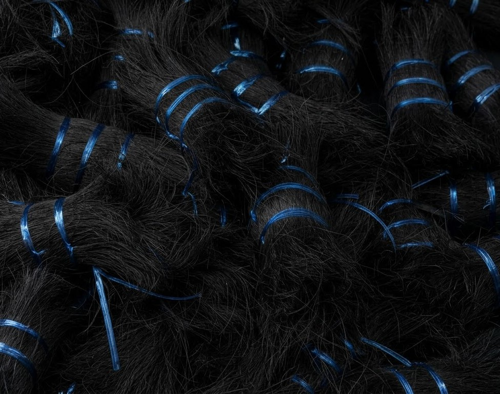

Natural Black Coir Fibre from Kanyakumari
We manufacture pure dyed black coconut bristle fibre in Kanyakumari, Tamil Nadu. Thoroughly cleaned, combed straight, and cut to standard 8" to 12" length for making brooms, brushes, and industrial sweepers. Direct factory rates and fast truck delivery to any city across India.

Standard 8" to 12" Black Coir Fibre
Clean, strong, and ready for making long-lasting brooms and brushes. Cut to standard 8" - 12" (200 - 300 mm) length.
Floor cleaning brooms, road sweepers, industrial roller brushes, deck scrubbing brushes, washing brushes, and strong coir ropes.
Wholesale Bale & Weight Calculator
Select quantity to calculate manual 52-56kg gunny bales and truckload capacity
What Makes Our Black Bristle Fibre Stronger?
Every strand of fibre has three key advantages that give it strength, deep colour, and cleanliness.
Jet Black Colour
Boiled in hot dye so the black pigment penetrates deep into the fibre. The colour remains solid black and does not wash out when cleaning floors with water.

Thick Natural Core
Natural thick coconut fibre provides great elasticity and bounce-back. Even after heavy scrubbing, bristles spring right back to their straight shape.
Dust-Free Combed Ends
Cleaned through steel hackle combs to remove all loose dust, pith, and short waste. Smooth fibres feed easily into automatic broom-making machines.
Hot boiled black dye penetrates core lignin. Colour stays jet black and never bleeds during heavy wet floor cleaning.
Natural coastal fibre thickness ensures bristles maintain upright rigidity and never go limp in commercial brooms.
Steel pin hackling removes all short waste and pith, ensuring smooth high-speed feeding into automatic brush machines.
How We Make Black Bristle Coir Fibre
5 simple steps to turn raw coconut husks into high-quality 52kg - 56kg manual gunny bales.
Husking
Selecting thick, mature coconut husks from trusted coastal godowns in Kanyakumari.
Length Sorting
Sorting and grouping fibres into standard 8" to 12" (200 - 300 mm) lengths.
Steel Pin Combing
Combed straight through sharp steel pins to remove dust, pith, and short baby hair.
Tying Small Bundles
Tied neatly into 100g to 250g hanks with durable blue plastic straps for easy handling.
Hot Dyeing & Manual Packing
Boiled in black dye, dried under natural coastal sun, and hand-packed into 52kg - 56kg gunny bales.
Direct Factory Processing: 35+ Years Coir Experience
With modern thermal dye boiling tanks and steel-pin combing machinery in Kanyakumari, Chinnathambi Coir Fibre (CCF) is dedicated to producing high quality dyed black coconut fibre. Our deep black color never washes out, the fibres stay stiff with great bounce-back, and we ship quickly to all states in India.
Our Actual Factory Production Photos
Click on any photo to see our real sun-drying yard, combed bundles, and manual hand-packed 52-56kg bales.

Engineered Quality. Verified Standard.
Certified physical tolerances, combing density, and standard commercial cut lengths verified under 35+ years of field mastery.
 📏 Scale Benchmark
🔍 Click to Inspect
📏 Scale Benchmark
🔍 Click to Inspect
Physical wooden scale calibration photo showing CCF combed black bristle hanks reaching standard 8" - 12" (~30 cm) height, strapped securely with blue bands for high-speed automated tufting.
| Standard Length | Metric (cm) | Inches | Combing Method | Fibre Strength | Main Uses |
|---|---|---|---|---|---|
| 8"-12" Standard Commercial Length ⭐ | 20.0 - 30.0 cm | 8.0 - 12.0 in | Steel Pin Combed & Dust-Free | High Stiffness & Elastic Bounce | Cleaning brooms, road sweepers, industrial roller brushes, deck scrubbers & coir twine |
| CUSTOM Custom Cut Length (On Order) | Per Order (Custom) | Per Order | Custom Specified Combing | Custom Specification | Special brush machines & custom broom manufacturing |
Direct Wholesale Supply Across All Over India
We partner with premier national transport carriers to deliver raw processed black bristle bales directly to your factory or godown.
Western India
Maharashtra (Mumbai, Pune, Solapur), Gujarat (Ahmedabad, Surat, Rajkot), Rajasthan (Jaipur, Jodhpur).
Northern India
Delhi NCR, Uttar Pradesh (Kanpur, Agra, Varanasi), Punjab (Ludhiana), Haryana.
Southern India
Tamil Nadu (Chennai, Madurai, Coimbatore), Karnataka (Bangalore), Kerala, Telangana (Hyderabad), Andhra Pradesh.
Eastern & Central
West Bengal (Kolkata), Bihar (Patna), Madhya Pradesh (Indore, Bhopal), Odisha (Bhubaneswar).
Technical & Commercial Specifications
Verified manufacturing parameters for CCF Black Bristle Coir Fibre production lines.
| Brand & Manufacturer | Chinnathambi Coir Fibre (CCF) - Kanyakumari District, Tamil Nadu (35+ Years Field Experience • Est. 6 Years Ago) |
|---|---|
| Product Line | Dyed Black Bristle Coir Fibre (Standard Commercial Lengths) |
| Core Operations | Raw Coconut Bristle Godown Procurement → Thermal Black Dyeing → Steel Pin Hackling → Coastal Sun Drying → Pan-India Dispatch |
| Commercial Length | 8" - 12" (200 - 300 mm) Standard Commercial Cut (and custom sizes on bulk order) |
| Bundle Strapping | 2 to 3 strong blue PP strapping bands per hank (100g - 250g hanks) |
| Moisture Level | Strictly < 15% Maximum (Prevents fungus/mould during transport) |
| Packaging | Manual hand-packed natural stitched hessian (gunny) bales (Approx. 52 kg to 56 kg, no machine baling) |
| Minimum Order Quantity (MOQ) | From 500 kg trial orders to full 10 - 25 Ton Truckloads (FTL / PTL) |
| Delivery Coverage | Door Delivery & Transporter Godown Delivery to all States across India |
Get Today's Wholesale Price (All-India Supply)
Tell us your city, required standard length, and quantity. Chinnathambi Coir Fibre (CCF) will calculate the best wholesale factory price + direct truck transport freight to your doorstep.